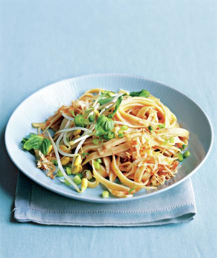

Spicy Coconut Noodles

Ingredients
- 8 ounces rice noodles or fettuccine
- 13.5-ounce can unsweetened coconut milk
- tablespoons tomato paste
- teaspoon chili powder
- teaspoon kosher salt
- tablespoon chili paste or sauce (optional)
- scallions, thinly sliced
- 1cup vegetable or chicken broth
- ounces bean sprouts
- 2 bay leaves
- basil leaves, whole or torn
- cup shredded coconut, toasted
DIRECTIONS
Cook the noodles according to the package directions. Drain and set aside.
Meanwhile, in a large saucepan, over medium-high heat, combine the coconut milk, tomato paste, chili powder, salt, and chili paste (if desired).
Bring to a boil, then reduce heat and simmer for 2 to 3 minutes.
Stir the drained noodles into the sauce and toss. Divide among individual bowls. Top with the scallions, sprouts, basil, and coconut (if desired).